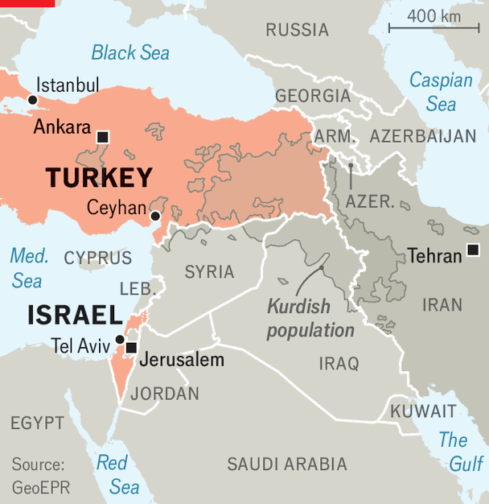

The next great Middle East rivalry
Turkey and Israel are natural allies and yet they are increasingly at odds
July 2nd 2026

Turkish and Israeli officials have been hurling threats and insults at one another for years. The war of words has grown more acrimonious since the start of Israel’s war in Gaza in 2023. But it seems to be getting out of control. Israeli politicians speak of Turkey in the same breath as Iran. On June 23rd an Israeli minister claimed that Turkey, along with Syria, had replaced Iran as the biggest danger to his country. Israel upped the ante on June 28th by recognising the genocide of the Armenian people carried out by the Ottomans in 1915 (Turkey does not recognise the deaths as a war crime, let alone a genocide).
Recep Tayyip Erdogan, the Turkish president, has accused Israel of genocide too, but in Gaza. He recently claimed that Israel’s bombing campaigns in Syria and Lebanon posed a threat to Turkey. In early June his interior minister said he hoped to become the governor of Jerusalem once the city came under Turkish control. The Ottoman empire ruled Jerusalem and Palestine for four centuries until 1917.
Much of this is posturing for domestic audiences. Israel’s prime minister, Binyamin Netanyahu, who faces voters in October, wants to sustain the narrative of an Israel besieged and thus the need for a strong leader, ie, him. Mr Erdogan, who may bring forward Turkey’s election, due in 2028, needs a bogeyman to distract from inflation at 30% and high interest rates.

But both sides fear being encircled by the other. Israel points to Turkey’s oversize footprint in Syria and its budding military alliances with Egypt, Pakistan and Saudi Arabia. Turkey stresses Israel’s wars in Gaza, Iran and Lebanon, and its co-operation with Kurdish insurgents. Turkish policymakers consider Israel an impediment to “every single file in the Middle East they’re involved in”, says Asli Aydintasbas of the Brookings Institution, an American think-tank. For now, the risk of confrontation is remote. But it is no longer negligible.
Israel’s war in Iran is only the most recent cause for alarm for Turkey. It has long opposed interventions there, fearing the prospect of Iranian state collapse, a new refugee crisis on its borders and disruptions to trade and energy flows. But it also worries that the Iranian regime, with which it has mostly cordial relations, might be replaced by one friendly to Israel.
Turkey also chafes at Israeli support for Kurdish armed groups in Syria, Iran and Iraq. American and Israeli plans to involve Kurdish fighters in the war confirmed Turkey’s worst fears. A personal intervention by Mr Erdogan is said to have helped convince Donald Trump to shelve the idea.
Israel’s expanding co-operation with Greece and Cyprus, designed to check Turkey’s influence in the eastern Mediterranean, is another source of friction. The three countries have stepped up intelligence-sharing, as well as naval and air exercises, and discussed plans to protect offshore energy infrastructure. In recent years Israel agreed to provide Greece with precision rocket artillery-launchers and Cyprus with air-defence systems. Turkey, meanwhile, is doubling down on its claims to disputed waters in the Mediterranean and to the gasfields beneath.
Israel has long been aggrieved by Turkey’s support for Hamas, the Islamists behind the October 7th attacks. But recently it has been more worried by its role in Syria. Ahmed al-Sharaa’s movement took over a country devastated by war. Still weak, his government has sought to placate Israel, its aggressive neighbour. Many Israeli officials, however, consider the country a ticking time-bomb, controlled by Turkey’s leaders who, they believe, have undue influence over the regime led by Mr Sharaa, a former al-Qaeda commander.
Tensions over Syria have subsided since 2025. But the potential for conflict remains. The countries have rival spheres of influence there. Turkey has troops in the north, Israel in the south. But their objectives remain incompatible. Turkey wants a strong Syrian state; Israel a weak one. Israel has carried out hundreds of strikes against Syrian military targets, including air bases slated to be transferred to Turkey. Regular communication between their intelligence agencies and armed forces has, so far, prevented Turkish and Israeli troops from ending up in each other’s crosshairs.
The war in Iran has strengthened Turkey’s hand. The country cemented its role as a broker between America and Iran, improved its standing inside nato and managed to remain on good terms with Mr Trump despite refusing to back his war. To hedge against potential threats from either Iran or Israel, Turkey has also continued to draw closer to other regional powers, especially through defence co-operation. Talks on a regional security pact, which Turkey wants to conclude with the Egyptians, Pakistanis and Saudis, have picked up steam over the past year.
Israel, meanwhile, has failed to achieve its aims in Iran. Mr Netanyahu resents Mr Trump’s bromance with Mr Erdogan and America’s readiness to work with Turkey elsewhere in the region, particularly Syria. Mr Trump’s repeated suggestions that the Syrian government take on Hizbullah is being seen by Israel as letting Turkey—Mr Sharaa’s patron—in through the back door. This has irked the Israeli prime minister. Aides to Mr Netanyahu say few things anger him more than to hear Mr Trump credit Turkey’s president with felling the Assad regime. Mr Netanyahu insists that Israel’s battering of Hizbullah opened the way for Syria’s revolution.
Israel is also alarmed by Turkey’s renewed attempts to secure the f-35 stealth fighters it ordered from America a decade ago (in the Middle East, only Israel possesses f-35s). America blocked the sale in 2019 after Turkey bought an s-400 air-defence system from Russia. But Mr Trump has suggested he may reverse the decision. On June 24th he said America was reviewing the issue. “I’m going to probably do something that’s going to make him very happy,” he said of Mr Erdogan.
Some analysts believe the f-35s explain Israel’s latest broadsides, and that Mr Netanyahu’s intended audience is Congress. “The Israelis know that Trump is getting ready for an f-35 breakthrough,” says Soner Cagaptay of the Washington Institute for Near East Policy, an American outfit, “and they want to kill it pre-emptively.”
Neither side has burned its bridges with the other entirely. Turkey maintains an embassy in Tel Aviv and Israel one in Ankara, although both recalled their ambassadors in 2023. Despite a trade embargo Mr Erdogan announced two years ago, Turkish exports continue to reach Israel, by way of other countries or the Palestinian Authority. Oil from Azerbaijan and northern Iraq still arrives in Israel through Ceyhan, a Turkish port.
Turkey and Israel may be able to bury the hatchet once the Netanyahu and Erdogan eras are over. Turkish and Israeli officials like to say that the two countries, as Western-aligned non-Arab powers in the Middle East, have too much in common to remain at loggerheads. In the 1990s Turkey was Israel’s most valuable regional partner.
But the angst goes beyond their current leaders. Israel sees Hakan Fidan, the Turkish foreign minister and a former spy chief who may succeed Mr Erdogan, as implacably anti-Israeli and claims he has strong ties to Iran. One Israeli intelligence analyst calls him “the most dangerous man for Israel in the region”. The prospect of open conflict between America’s closest ally and nato’s second-largest army seems far-fetched. But recent years have shown that wars once deemed unthinkable are possible. And the stakes could not be higher. ■
Sign up to the Middle East Dispatch, a weekly newsletter that keeps you in the loop on a fascinating, complex and consequential part of the world.